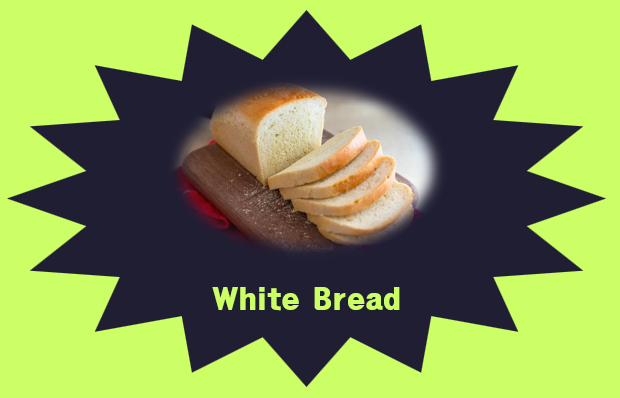

White bread typically refers to breads made from wheat flour from which the bran and the germ layers have been removed from the whole wheatberry as part of the flour grinding or milling process, producing a light-colored flour